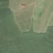
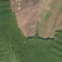

32,3 ha de pădure schimbată lângă Tătârlaua
Între vara lui 2025 și 14 mai 2026, pe aproximativ 32,3 ha de pădure din comuna Jidvei, lângă Tătârlaua, județul Alba, imaginile Sentinel-2 arată că vegetația a dispărut sau s-a schimbat puternic. Nu pare o tăiere de lemn.
Autorizația de tăiere
nu e tăiere de pădure
Schimbarea nu pare tăiere de lemn, așa că autorizațiile de tăiere nu se aplică. E teren agricol: arat, cosit sau recoltat. Nu era pădure.
Ce se vede în poze: În poza detaliată, zona marcată este un teren deschis, împărțit în parcele, fără coroane de copaci; pădurea verde rămâne alături, în afara conturului. După, parcelele au devenit maro închis, ca după arat sau cosit, deci nu este o tăiere de pădure.


Înainte și după: Copernicus Sentinel-2, 10 m pe pixel, conturul zonei cu portocaliu. Poza detaliată (Esri World Imagery) e de acum 1–4 ani: arată ce era acolo înainte, nu tăierea.
Pe scurt
- Identificator
- 20260514_46198_24132
- Locul
- Tătârlaua, comuna Jidvei, județul Alba (SIRUTA 5103)
- Coordonate (centru)
- 46.19783, 24.13198 · Google Maps · OpenStreetMap
- Suprafața
- 32,3 ha (din pixeli de 10 m; ± câțiva pixeli pe margine)
- Pădurea întreagă
- în vara lui 2025 (de atunci, nori sau iarnă)
- Prima imagine cu schimbarea
- 14 mai 2026
- Imagini în care se vede schimbarea
- 8
- Cât de sigur e semnalul din satelit
- ridicată
- Autorizația cea mai apropiată
- APV 2500295001000 · Ocolul Silvic Blaj, la 467 m de zonă
- Terenul
- în afara amenajamentelor silvice publicate (pășune, mal de apă sau pădure privată fără amenajament în registru)
- Chiar lângă
- o altă schimbare, văzută pe 27 aprilie 2026: pagina ei
- Garda Forestieră
- Cluj
Dacă vrei să verifici sau să sesizezi
- Pădurile din județul Alba sunt în grija Gărzii Forestiere Cluj, care controlează tăierile și dă amenzile.
- Autorizația găsită în zonă e emisă de Ocolul Silvic Blaj.
- Formularul Gărzii Forestiere Naționale primește sesizări și fără nume. Trimite linkul acestei pagini, coordonatele și pozele. Dacă tăierea e în desfășurare, sună la 112.
- Autorizațiile și transporturile de lemn se pot căuta în Inspectorul Pădurii.
Pagina arată ce se vede din satelit și ce scrie în registrul public; nu e o dovadă în sine.
Cum citezi zona
Linkul acestei pagini nu se schimbă. Dacă zona iese vreodată de pe hartă, pagina rămâne, cu data și cu ce știam despre ea.
Pădurea RO, zona 20260514_46198_24132: 32,3 ha, Tătârlaua, comuna Jidvei, județul Alba; schimbare văzută din satelit între vara lui 2025 și 14 mai 2026. https://iliemihai.github.io/padurea-ro/zona/20260514_46198_24132/ (consultat la [data]). Date: CC BY 4.0.
Datele zonei: GeoJSON · toate zonele: date deschise · licența CC BY 4.0.
Istoricul zonei pe hartă
Starea se poate schimba când registrul publică o autorizație sau când analistul vede poze mai bune. O ținem aici, ca un link citat să arate și ce spuneam atunci.
Pe hartă cel târziu din 5 noiembrie 2026.
- 5 noiembrie 2026 – azi · nu e tăiere de pădure
Detalii tehnice, pentru verificare
De ce acest nivel de încredere:
- văzută schimbată în 8 imagini diferite
- peste 3 ha
- pădurea din jur e neschimbată
- ultima dată am văzut-o intactă în vara lui 2025 (de atunci, nori sau zăpadă)
- AI-ul vede pădure dispărută
Ce a văzut analistul cu context: DETAILED BEFORE arată pajiște/teren agricol cu linii drepte de parcele și fără coroane, deci nu era pădure închisă (coronament 2000 de 1% confirmă); clasa WorldCover „copaci 91%” este contrazisă de imaginea detaliată. În AFTER și AFTER WIDE fâșia maronie are margini drepte, se potrivește cu parcelele vecine și pădurea din jur rămâne verde, deci nu e culoare de toamnă. Nu se văd cioate sau resturi de exploatare. Nu se poate exclude cu totul o pășune arsă sau curățată (tonul nu e negru), de aici încrederea moderată.
- Placa Sentinel-2
- 34TGS
- NDVI de referință
- 0.67
- NBR de referință
- 0.45
- Scăderea în pădurea din jur
- 0.0
- Persistență
- 0.99
- NDVI / NBR după
- 0.292 / -0.111
- Analistul de zi (model)
- taiere · 0.85 · claude-haiku-5-5
- Analistul cu context (model)
- camp · 0.55
Cum se calculează fiecare: metodologia.
Pune harta zonei într-un articol
Copiază codul în articol (merge în majoritatea site-urilor de știri). Sau pune doar linkul: WhatsApp, Facebook și X arată singure poza zonei.